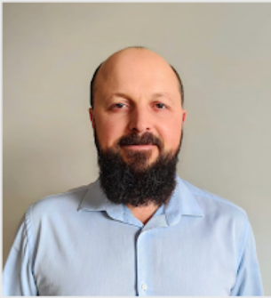

Mykola Levchenko

- Higher education
-
1996-2000 Computer systems, automation and management, Kherson State
Technical University
-
2000-2001 Control and automation systems, Kherson State Technical
University
-
2001-2002 Specialist in Finance Faculty of Retraining, Kherson State
Technical University
- Experience
- 2002- Inspector of the Skadovsk Customs Office
- 2005- Chief Inspector of the Skadovsk Customs Office
- 2008- Main Inspector of the Skadovsk Customs Office
- 2012-2016 Deputy Head of the Skadovsk Customs Office
-
2022-2023 Construction of prefabricated system modules in the
Frankfurt trade fair construction
- Skills/Languages
- Ukrainian-C2
- Russian-C2
- English-B1
- German-A1